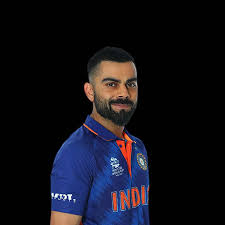

About
Virat Kohli was born on November 5, 1988, in Delhi, India. He grew up in Delhi and was one of the first to train at the West Delhi Cricket Academy, created in 1998. In 2002 he played for the Delhi Under-15 team and was the highest run scorer in the 2003–04 Vijay Merchant Trophy, playing for the Delhi Under-17 team.
In February 2006 Kohli made his domestic debut for Delhi in a one-day match against Services (a team representing the Indian armed forces) but did not get a chance to bat. He scored only 10 runs in his first-class debut (first-class cricket refers to matches that last three or more days and feature two sides of 11 players each) against Tamil Nadu in November that year. He scored 90 runs in difficult conditions in a first-class match against Karnataka in December, helping Delhi draw the Test. In April 2007 he scored 35 runs in his T20 domestic debut against Himachal Pradesh.
Kohli captained the Under-19 Indian cricket team to victory at the ICC Under-19 World Cup in Kuala Lumpur, Malaysia, in 2008. His exploits were rewarded with an IPL contract from RCB for $30,000. He also made his international debut in an ODI that year, opening the batting and scoring 12 in a defeat of Sri Lanka in Dambulla, Sri Lanka. In 2009 he scored 405 runs in nine innings in the Emerging Players Tournament in Australia, ensuring that he would be at the top of the national team selectors’ minds.
Indian Premier League
Get Unlimited Access
Try Britannica Premium for free and discover more.
Virat Kohli has played for the Royal Challengers Bangalore throughout his IPL career and is the only player to have played for just one franchise in IPL history. His first two seasons for RCB did not yield much in the way of runs, but he had some standout performances after his promotion to vice captain in 2010. Ahead of the 2011 IPL auctions, teams were mandated by league officials to retain up to four players each. Kohli was the only player RCB retained, for $1.8 million. He played some key knocks (innings) as RCB reached the league final but lost to Chennai Super Kings that year.
Kohli was appointed captain in 2013 and continued to lead RCB in the next eight seasons. He was retained once again in 2014 for $1.6 million. In 2015 he moved up the order to open the batting, and his scores subsequently improved. The following year was a landmark season for him as he scored 973 runs with 4 hundreds, earning the Orange Cap for leading run scorer that year, a single-season record he holds as of 2023. Unfortunately, RCB lost in the league final to the Sunrisers Hyderabad.
Kohli was retained in 2018 for $2.1 million but struggled to score as freely as he did in 2016. In 2022 he was retained again for $2 million but relinquished the captaincy, which went to Faf du Plessis. Kohli has since captained on occasion when du Plessis has been injured. Kohli is the highest individual run scorer in the history of the IPL, but RCB’s lack of titles has frustrated his fans.
Early international career
Kohli’s strong run of scores led to a long stint with the national team. He scored his first ODI hundred in 2009 against Sri Lanka. A part of the Indian team at the 2011 ODI World Cup, Kohli scored a hundred in his World Cup debut against Bangladesh. He would go on to score a crucial 35 runs in the final as India won the World Cup for the first time in 28 years.
Kohli debuted in Tests later in 2011 against the West Indies, as players such as Sachin Tendulkar were rested after the World Cup win. In the disastrous tour of Australia in 2011–12, India lost the Test series 4–0, but Kohli scored the only century by an Indian player on the tour, earning praise. He was by now establishing himself as a master of the chase in ODIs. In the 2012 Commonwealth Bank Series tournament with Australia and Sri Lanka, India needed to chase Sri Lanka’s score of 320 in only 40 overs to claim a crucial bonus point and stay in contention for the final. Kohli’s unbeaten 133 in 86 balls helped India score the required runs in just 36.4 overs, but India eventually failed to qualify as Sri Lanka beat Australia in the last qualifying match.
Kohli was appointed vice captain of the ODI team for the 2012 Asia Cup, and, though India failed to reach the final, Kohli recorded his highest ODI score of 183 in a successful run chase against Pakistan and ended the tournament as the highest run scorer. Kohli was a part of the Indian squad that won the 2013 ICC Champions Trophy and was the top scorer with 43 runs in the final against England.
Upon the retirement of his idol Tendulkar in 2013, Kohli took over the crucial number four batting position in Tests and showed he had earned the spot by scoring 119 and 96 across the two innings in a drawn Test against South Africa at Johannesburg. In the second match of a 2013 ODI series against Australia, Kohli scored a century in just 52 balls, the fastest by an Indian player as of 2023, as India successfully chased the target of 360 set by Australia with 39 balls to spare. In the sixth match, he scored a hundred in 61 balls as India successfully chased 350.
Kohli was the highest run scorer at the 2014 T20I World Cup, playing a key role in India’s semifinal win over South Africa. He was the top scorer in the final as well, a match that India lost to Sri Lanka. Kohli subsequently struggled on India’s multi-format tour of England that year, leading many to question his abilities. In the 2015 ODI World Cup, he scored one century against Pakistan but otherwise met with difficulty. In the 2016 Asia Cup, his run of scores helped India reach the final and win the title. In the 2016 T20I World Cup, he was again Player of the Tournament, and he was the top scorer in a successful chase against Australia as well as in the semifinal, which India lost to the eventual champion West Indies.
.